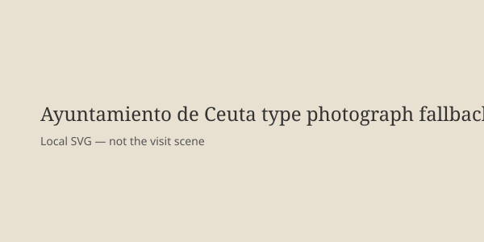

Ceuta · Institucional · 13 de octubre de 2026
Los Reyes llegan a Ceuta en la primera visita oficial de su reinado tras la entrada masiva de julio.

Lo que coinciden las redacciones
Felipe VI y la reina Letizia aterrizaron el 13 de octubre de 2026 en el helipuerto de Ceuta hacia las 12:17. Es la primera visita oficial a la ciudad autónoma desde el inicio de su reinado en 2014. La última de un jefe de Estado fue la de Juan Carlos I y Sofía en noviembre de 2007. La agenda, publicada por la Casa Real, incluye recepción en el Ayuntamiento por el presidente Juan Jesús Vivas y la Asamblea, reunión de trabajo, visita al Colegio Vicente Aleixandre, acto ecuménico en el cementerio de Sidi Embarek en recuerdo de las personas fallecidas en el mar los días 30 y 31 de julio, y encuentro con la sociedad ceutí en el Parador. Los Reyes pernoctarán en Ceuta, primera vez en democracia, y viajarán a Melilla al día siguiente. Les acompaña el ministro de Política Territorial Ángel Víctor Torres; el presidente del Gobierno Pedro Sánchez no está presente.
Las cifras de la crisis de julio coinciden en las redacciones: más de 80.000 personas cruzaron desde Marruecos en dos días. Decenas de fallecidos en el mar fueron recuperados. La visita se produce en plena precampaña de las elecciones generales del 29 de noviembre, convocadas anticipadamente.
Lo que es solo una cita
Declaraciones de autoridades locales que califican la visita como “sembrar confianza” o “Ceuta ya no es la que era” son valoraciones políticas. No son mediciones de la situación migratoria residual. Gritos de apoyo o críticas en la calle son actos de ciudadanos; no prueban el estado de las instituciones.
Mecanismo e historia que el lector necesita
Ceuta y Melilla son territorios españoles en el norte de África, fronterizos con Marruecos. Su estatuto de ciudades autónomas implica competencias propias pero dependencia del Estado en defensa, frontera y migración. Las entradas masivas de julio se produjeron en un contexto de tensiones bilaterales y de políticas de control fronterizo. La Corona, en el sistema constitucional español, representa la continuidad del Estado y realiza actos de presencia institucional. Una visita que incluye pernocta y un acto de recuerdo a fallecidos en el mar es un gesto simbólico de proximidad. No modifica por sí sola las cifras de personas que permanecen en la ciudad ni las negociaciones con Marruecos.
El desfile del 12 de octubre en Madrid, con abucheos al presidente, y la ausencia de Sánchez en Ceuta son hechos observables. La interpretación de si eso indica distancia política es una lectura posterior. El cementerio de Sidi Embarek es el lugar donde se enterraron la mayoría de los cuerpos recuperados; el acto ecuménico reúne a las confesiones presentes en la ciudad. Eso es el diseño de la agenda, no un veredicto sobre la gestión de julio.
Para un lector fuera de España: las ciudades autónomas no son colonias; son parte del territorio español con representación en las Cortes. Las crisis migratorias en la frontera sur se han repetido en ciclos ligados a decisiones de Rabat y a la capacidad de acogida española. La cifra de 80.000 es la que reportan las fuentes primarias del periodo; las estimaciones de cuántos permanecen varían y no se cierran en este texto.
Lo que esta historia no es
No es una resolución de la situación migratoria. No es un juicio sobre la política del Gobierno. No es una fotografía del helicóptero ni de la multitud de hoy. La imagen superior es una toma de tipo del edificio del Ayuntamiento tomada en otro momento.

Artículos fuente y puntuaciones
| Medio | Titular | T | N | C |
|---|---|---|---|---|
| EFE / Diario de Navarra | Los reyes llegan a Ceuta para una visita histórica | 96 | 0 | 98 |
| Casa Real | Visita oficial de Sus Majestades los Reyes a la Ciudad Autónoma de Ceuta | 98 | +5 | 85 |
| El Mundo | Vivas agradece la visita de los Reyes para “sembrar confianza” | 93 | +10 | 90 |
Imagen: Wikimedia Commons tipo Ayuntamiento de Ceuta vía Special:FilePath. Caption indica que no es la escena del 13 de octubre. onerror al SVG local. Sin atributo crossorigin.